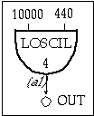

instr 106
106.orc
106.sco

instr
106
; SIMPLE WAVETABLE
a1
loscil
10000, 440, 4
out
a1
; Function 4 uses the GEN01 subroutine to read in an AIF audio file
f 4 0 0 1 "sing.aif" 0 4 0
;inst start duration
i 106 0 2.3